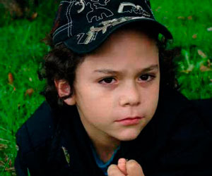
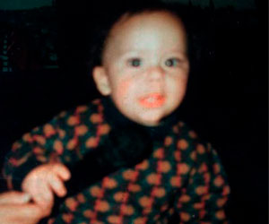
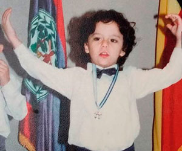
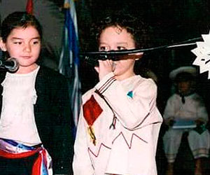
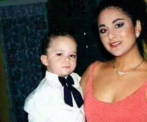
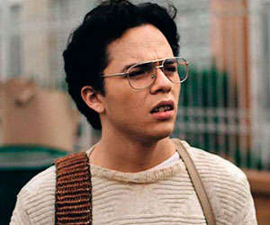
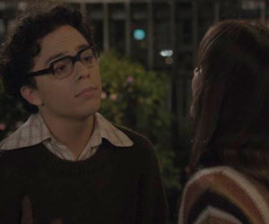

Sebastián Gutiérrez
Este joven actor desde muy temprana mostró un gran interés por la actuación y todo lo relacionado con las artes escénicas, con tan solo 19 años cuenta con una excelente trayectoria a nivel profesional, su más reciente interpretación fue una de las etapas cruciales en la vida del humorista Jaime Garzón.
-
Muy profesional y extrovertido en su primer estudio fotográfico.
-
Desde muy temprana edad Sebastián sentía curiosidad por aquellos objetos que hoy en día son esenciales en su vida.
-
No perdía la oportunidad, para estar frente a un público, aquí celebrando la independencia de El Salvador.
Sebastián nació en El Salvador y creció en Colombia, es el hombre de la casa ya que vive en compañía de sus tres hermanas y madre. Conozcan un poco de la vida de este talentoso actor quien nos deja ver un poco de su historia través de estas fotografías.
-
 Grabación de La Pola, junto a Raúl Cabrera, su mejor amigo e hijo de Sergio Cabrera.
Grabación de La Pola, junto a Raúl Cabrera, su mejor amigo e hijo de Sergio Cabrera. -
Recital en El Salvador apenas cursaba preescolar, ya daba señales de su vocación actual.
-
Muy elegante junto a su hermana mayor Nara, quien lo acompaña a un evento formal.
SERIE DE TELEVISIÓN GARZÓN VIVE
- 
- 
-